Topografia com GPS RTK de precisão centimétrica para imóveis urbanos e rurais, obras e projetos de engenharia.
Modelo digital de terreno (MDT) 3D
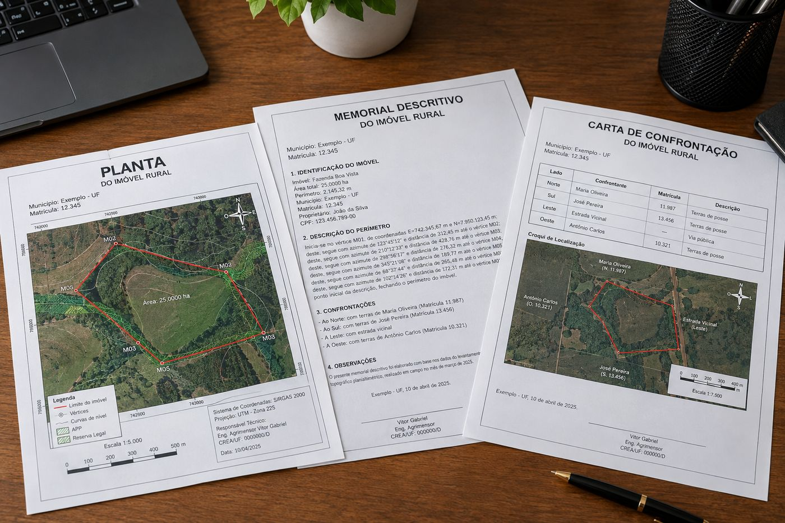
Planta, memorial e carta de confrontação
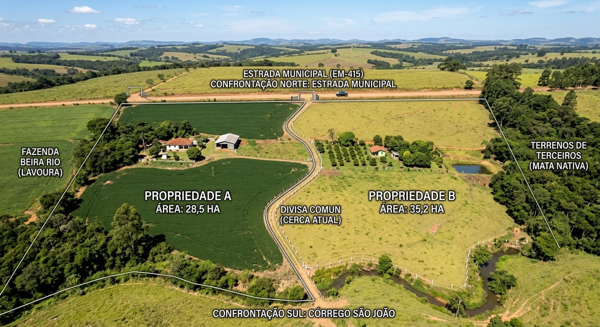
Divisas e confrontações
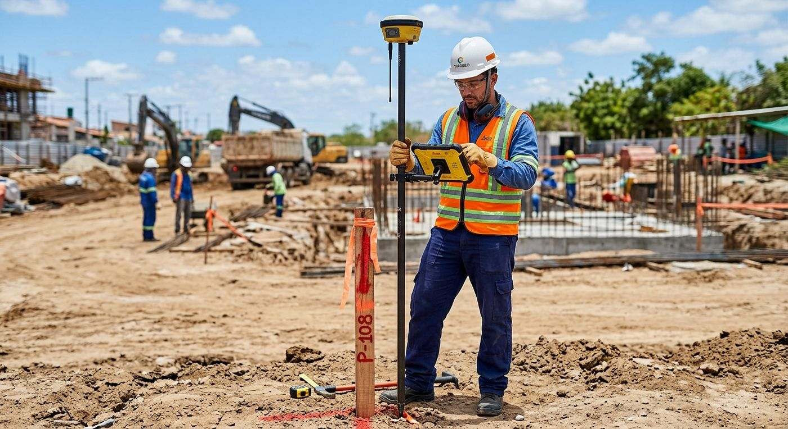
Locação com GPS RTK
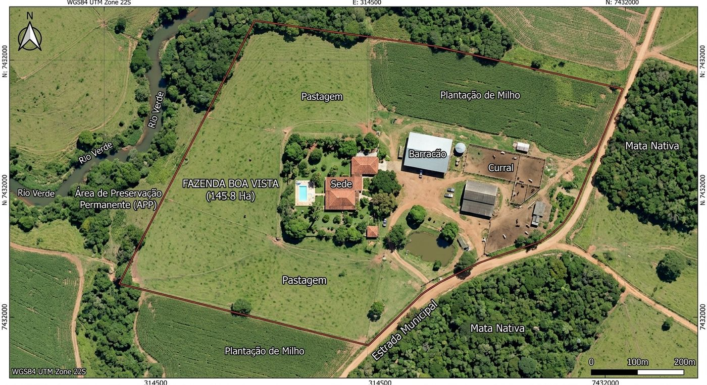
Ortofoto de imóvel ruralPontos e diferença de cotas no MDT
Topografia com GPS de precisão
Levantamento topográfico
Medimos o terreno com GPS RTK de precisão: limites, relevo, curvas de nível e tudo o que já existe na área. O resultado é o modelo digital do terreno, a base técnica de qualquer projeto de engenharia.
Para que serve: loteamentos, condomínios, mineração, terraplenagem e drenagem. Com o relevo medido certo, o projeto é feito sobre a realidade, o volume de corte e aterro é calculado com segurança e a obra evita retrabalho e custo extra.
Medição de terra e cartório
Regularizamos o georreferenciamento do seu imóvel, seja urbano ou rural, com emissão de plantas, memoriais descritivos, cartas de confrontação e demais documentos exigidos.
Para que serve: registrar, regularizar, vender, financiar ou retificar a área do imóvel. Você recebe a documentação pronta para levar ao cartório, à prefeitura ou ao banco.
Desmembramento e remembramento de imóveis
Dividimos e unimos glebas e lotes atendendo a toda a exigência jurídica e cartorial, com planta e memorial de cada parte.
Para que serve: vender parte do imóvel, dividir herança ou sociedade, registrar áreas separadas ou unir lotes vizinhos em uma só matrícula.
Locação de piquetes
Levamos o projeto para o campo: marcamos com piquetes e marcos, nas coordenadas exatas, os pontos de projetos de engenharia, irrigação, drenagem, loteamentos e infraestrutura.
Para que serve: começar a obra no lugar certo, implantar linhas de irrigação e drenagem com o caimento correto e demarcar lotes e divisas sem erro.
Monitoramento de imóveis rurais
Geramos ortofotos com drone e calculamos áreas da propriedade: lavouras, pastagens, reservas, construções e acessos.
Para que serve: acompanhar o uso da terra, conferir áreas plantadas e de preservação, planejar a produção e ter um registro atualizado do imóvel.
Validação de levantamentos topográficos
Checamos a precisão de levantamentos já executados por terceiros, comparando pontos e cotas com medições de controle, e fazemos a análise crítica do resultado.
Para que serve: dar segurança para aprovar ou reprovar um projeto antes de investir nele, e identificar erros de levantamento que poderiam comprometer a obra.
Agro
Serviços para o AGRO
Imagens de drone e análise para você enxergar cada planta da sua área e decidir o manejo com base em números.
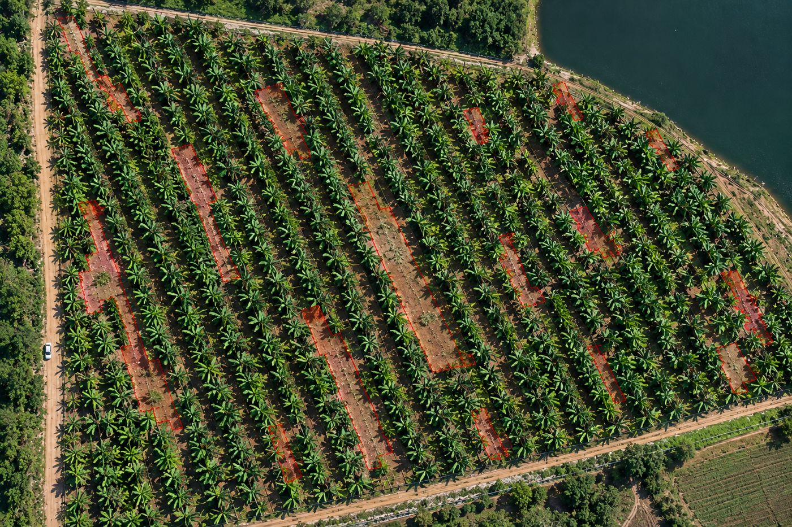
Falhas de plantio em bananalContagem de plantas
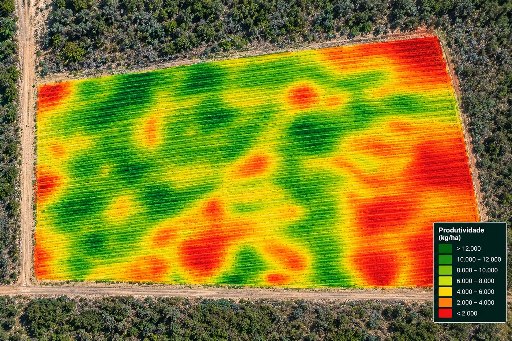
Mapa de produtividade
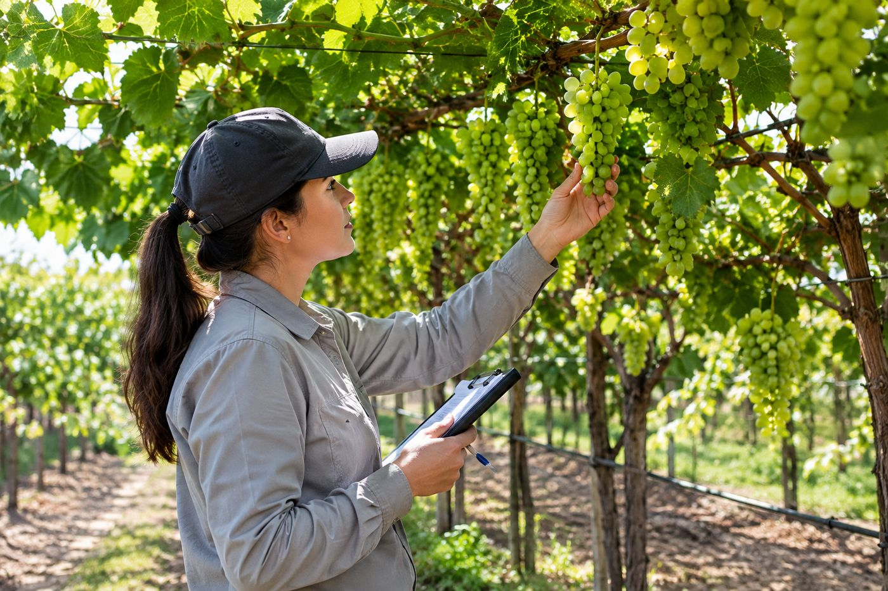
Acompanhamento de manejo em uva
Agricultura de precisão
Falha de plantio
Identificamos falhas de plantio em qualquer cultura, com modelos treinados para manga, uva, banana, coco e outras.
Para que serve: aumentar a área plantada e, consequentemente, o retorno econômico, replantando exatamente onde há falhas.
Contagem de plantas
Contabilizamos a quantidade de plantas dentro do perímetro agricultável, a partir de ortofotos em alta resolução.
Para que serve: conhecer o estande real da área, planejar insumos, mão de obra e colheita, e acompanhar a evolução do plantio.
Mapas de produtividade
Mapeamos a produção da área e mostramos onde ela é maior e onde é menor.
Para que serve: identificar as regiões que produzem mais e replicar o manejo nas demais, e investigar o que pode melhorar nas que produzem menos.
Avaliação de eficiência de manejo
Conduzimos o acompanhamento de pesquisa e desenvolvimento de produtos, variedades, manejos e outras práticas no campo.
Para que serve: comparar tratamentos com dados reais e decidir com segurança o que vale a pena adotar na propriedade.
Do alto
O drone enxerga em minutos o que levaria dias a pé
Em loteamentos, obras e propriedades rurais, o mapeamento com drone registra a área inteira em alta resolução, com medidas reais e imagens atualizadas para planejar, acompanhar e decidir.
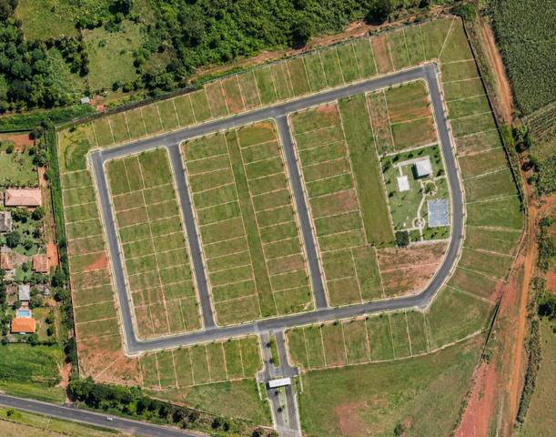
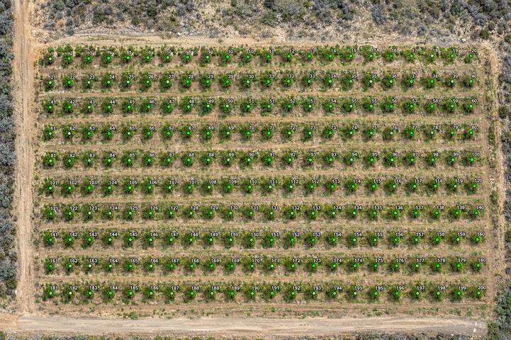
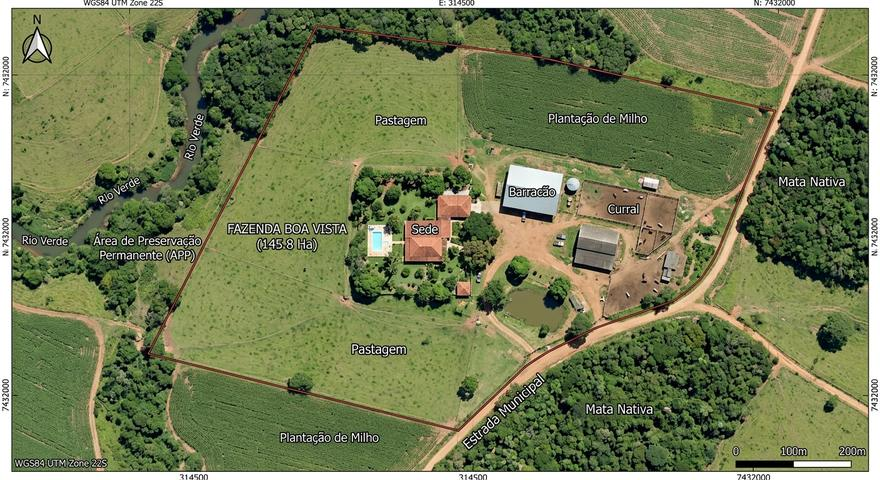
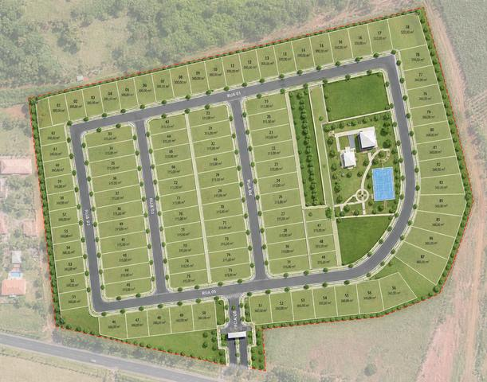
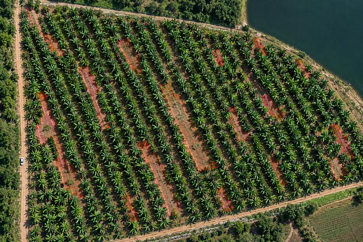
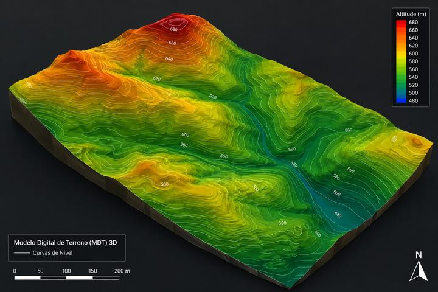
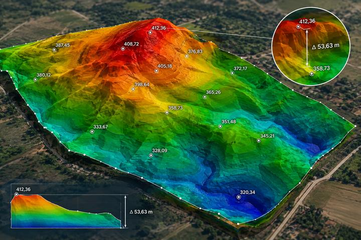
Da foto à planta
Arraste e veja a imagem aérea virar projeto
O aerolevantamento é indispensável para a elaboração de um projeto: auxilia no planejamento e na execução. É assim que um mapeamento vira base para projeto, loteamento ou regularização.
Depende do tamanho do imóvel, da localização e dos documentos que você precisa. Mande a localização pelo WhatsApp e respondemos com o valor fechado, sem compromisso.
Quanto tempo demora?
Lotes urbanos costumam ser medidos em uma visita de campo. O prazo de entrega dos documentos é informado no orçamento, antes de você fechar.
Preciso de ART?
Na maioria dos casos, sim: cartórios, prefeituras e bancos pedem a ART junto com a planta e o memorial. Nós emitimos a ART no CREA.
A medida do meu terreno não bate com a escritura. E agora?
É mais comum do que parece. Fazemos o levantamento real e indicamos o caminho, que pode ser uma retificação de área no cartório.
Vocês atendem fora de Petrolina?
Sim. Atendemos Petrolina, Juazeiro e cidades do Vale do São Francisco, em áreas urbanas e rurais.
Vocês fazem imóvel rural?
Fazemos. Atendemos imóveis urbanos e rurais: georreferenciamento de sítios e fazendas, desmembramento de glebas, ortofotos e cálculo de áreas, além de serviços para o agro, como identificação de falhas de plantio, contagem de plantas e mapas de produtividade.